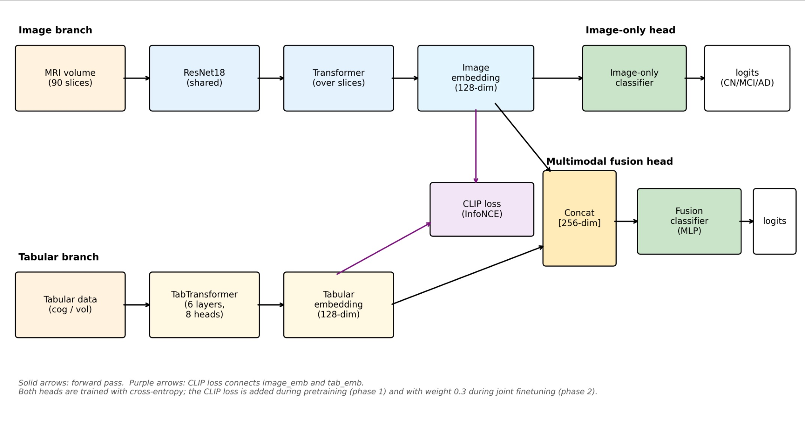
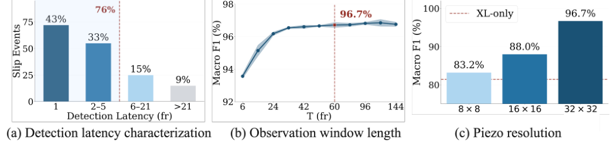

Figure 1 : Beamtracing for # 81069 \#81069 , t = [ 0.8 − 0.9 ] t=[0.8-0.9] s, poloidal angle θ = − 50 ∘ \theta=-50^{\circ} . The blue ray indicates the reference channel, F r e...
【P3】原始应用是 MRI 与临床表格分类；可迁移模块是物理解剖锚定、按标签泄漏风险分层的多模态对比目标和 ROI 裁剪，对应抑制无关视觉区域、审计诊断标签泄漏和提高解释性。轻量 ResNet18 加单层 Transformer 的显存可控，ROI 还可降计算；风险是错误物理先验裁掉真正前兆。最小实验：用人工/物理 ROI 和不含标签定义变量的诊断子集，对比全图、ROI、对比融合的 AUC、提前量、Grad-CAM、显存与延迟。
研究背景
由原简报的核心问题、选取理由和相关性整理，不替代原文背景综述。
图像模型可能关注背景，表格变量又可能包含定义标签的信息，造成虚假多模态收益。
从本日报的选取理由看，【P3】原始应用是 MRI 与临床表格分类；可迁移模块是物理解剖锚定、按标签泄漏风险分层的多模态对比目标和 ROI 裁剪，对应抑制无关视觉区域、审计诊断标签泄漏和提高解释性。轻量 ResNet18 加单层 Transformer 的显存可控，ROI 还可降计算；风险是错误物理先验裁掉真正前兆。最小实验：用人工/物理 ROI 和不含标签定义变量的诊断子集，对比全图、ROI、对比融合的 AUC、提前量、Grad-CAM、显存与延迟。
核心问题
如何确保融合收益来自真实互补证据而不是背景偏差或标签泄漏？
对当前主题的关键意义在于：原始领域为医学影像；模块是物理 ROI 与泄漏审计；对应 P3 的视觉证据抑制和解释。ROI 可降低显存，风险是先验错误。最小实验按上述协议测 AUC、提前量、解释性和资源。
方法与关键创新

Figure 1 : Multimodal architecture. Image and tabular embeddings (128-d) are aligned by a CLIP loss. The image-only head classifies from the image embedding alone; the fusion head ...
Fig. 2: Overview of the proposed uncertainty-guided sparse refinement pipeline. ACT first predicts a coarse action chunk and the corresponding decoder hidden states. A lightweight ...
如何统一异采样率互补传感器，并在极低延迟下跨对象、传感器和机器人泛化？
对当前主题的关键意义在于：将高频诊断与低频通道分别编码，统一到低频因果时钟，比较 late fusion 与 cross-attention 的 AUC、提前量、显存和 P95 延迟。
方法与关键创新

Figure 7: Results on UMI test splits. (a) 76% slip events can be detected within 5 frames (20.8 ms detection latency; 23.1 ms including model inference). (b) Performance saturates ...
Figure 1 : Overview of Scalar . Query-dependent weights combine the observed modality embeddings into a normalized spherical centroid. Its cosine similarity to the query provides a...
Figure 2 : An overview of our proposed MarKey framework. The pipeline consists of two main stages: (1) Preliminary Preparation : Given a long video 𝒱 \mathcal{V} and a text query q...
![Fig. 2: Overview of the proposed uncertainty-guided sparse refinement pipeline. ACT first predicts a coarse action chunk and the corresponding decoder hidden states. A lightweight uncertainty head reads the detached coarse hidden states and predicts one scalar uncertainty score for each timestep. The top- ⌊ ρ K ⌋ \lfloor\rho K\rfloor timesteps are selected to form a binary refinement mask. Residual correction is applied only to the selected timesteps, while the remaining timesteps keep the coarse prediction unchanged.](../assets/figures/7594a0193119a59e.png)
![Figure 2 : An overview of our proposed MarKey framework. The pipeline consists of two main stages: (1) Preliminary Preparation : Given a long video 𝒱 \mathcal{V} and a text query q q , we first construct a representative anchor subset to summarize the global visual content of the video, and encode the anchor subset, candidate frames, and the query into a shared embedding space. (2) Greedy Frame Selection with Sliding Window : at each step, a bounded context window is formed from previously selected frames, and every remaining candidate is evaluated by a contextual utility that combines query relevance, coverage gain, and redundancy penalty. These three terms are weighted and aggregated, and the candidate with the maximum utility is selected as the next keyframe. Repeating this process until the frame budget K is reached yields a compact subset that is query-relevant and visually representative.](../assets/figures/c9dc9e75423823f5.png)